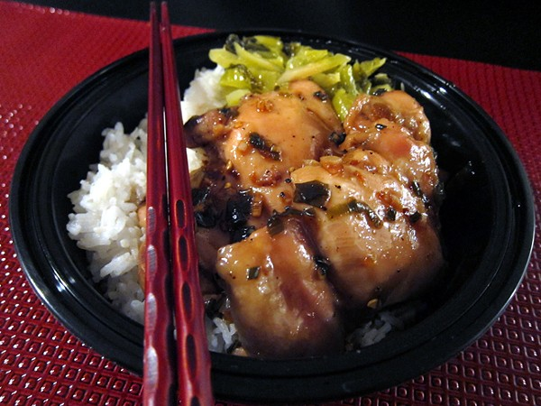

Sweet & Spicy Sticky Chicken

Description
WI've been making this recipe for Sweet & Spicy Sticky Chicken since it was published in the November 2001 issue of Fine Cooking.
That's almost 10 years. I don't think I have many recipes that stand the test of time. I usually cook recipes once, toss, and
then look for the next best recipe.
This recipe has stuck around because I really like the flavors here. It's sweet from the brown sugar, spicy from red pepper flakes, and it's pretty salty from soy
sauce and fish sauce. Some people don't like fish sauce, but I love it. I'm not really sure how it's made (and I don't think I want to know), but it has a distinct,
pungent flavor. You can find it at any Asian grocery store.
Ingredients
- 1/2 cup brown sugar
- 1/4 cup fish sauce
- 1/3 cup water
- 3 tablespoons rice wine vinegar
- 2 tablespoons soy sauce
- 1 tablespoon fresh ginger, minced
- 1 garlic clove, minced
- 1/2 teaspoon crushed red chili pepper flakes
- 1 tablespoon peanut or vegetable oil
- 3 scallions, thinly sliced
- 8 boneless, skinless chicken thighs
- fresh cilantro stem (optional)
Instructions
- In a bowl, whisk together the brown sugar, fish sauce, water, rice wine vinegar, soy sauce, ginger, garlic,
black pepper and crushed red chile flakes..
- Heat oil in a large frying pan over medium heat. Add the scallions and cook until soft, about 3 minutes.
- Add the thighs and the brown sugar mixture. Turn the heat to high and bring to a boil. As soon as it comes to a boil,
reduce the heat to low and simmer, turning the thighs occasionally for about 20 minutes.
- Then turn the heat back up to high and cook for another 5 to 10 minutes until sauce thickens and slightly browns chicken.
Garnish with cilantro.
Recipe from the
November 2001 issue of Fine Cooking magazine, as shown on the Eat My Charlotte website